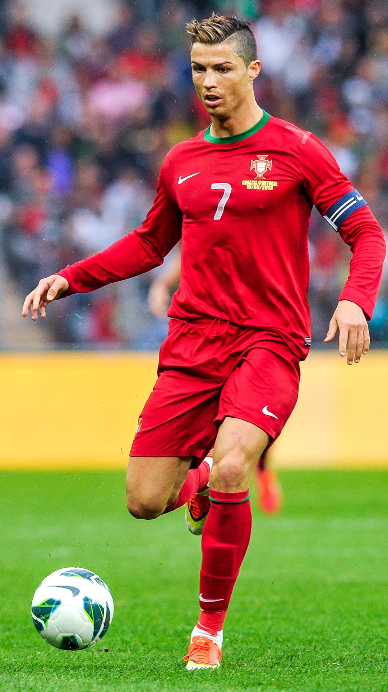
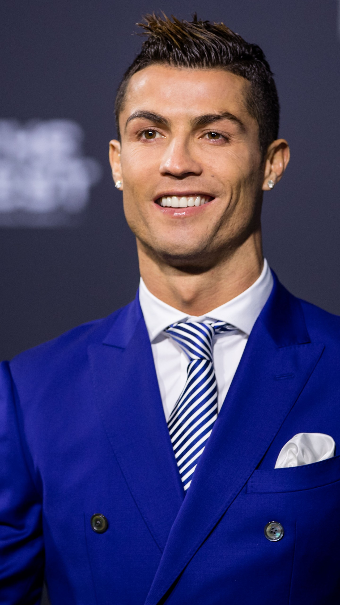
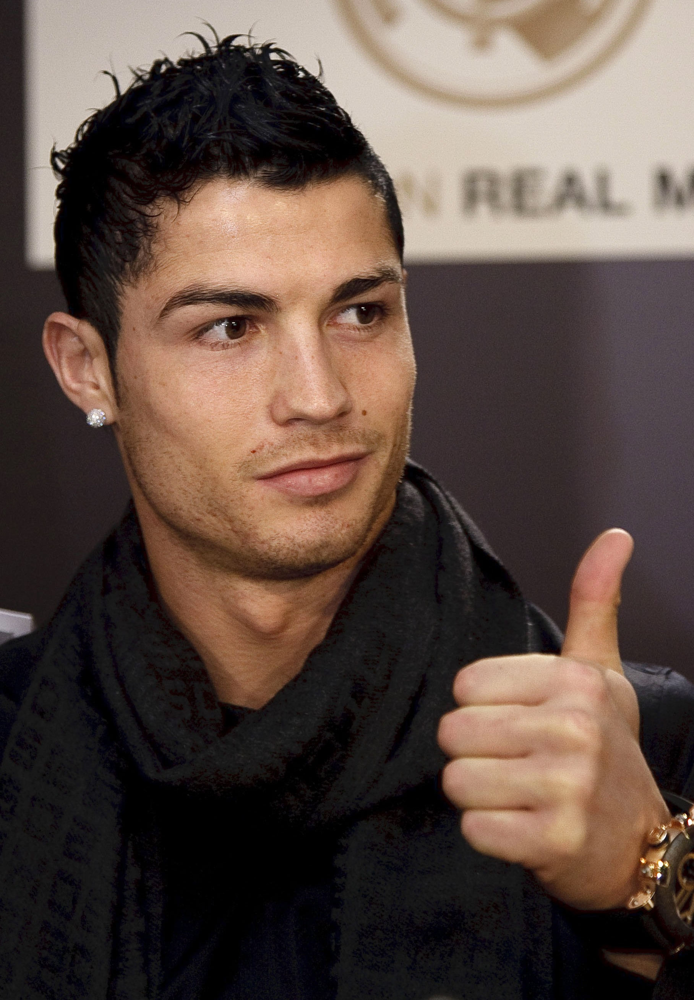
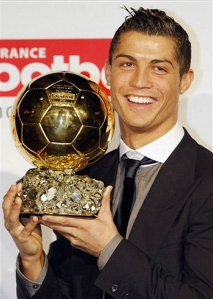
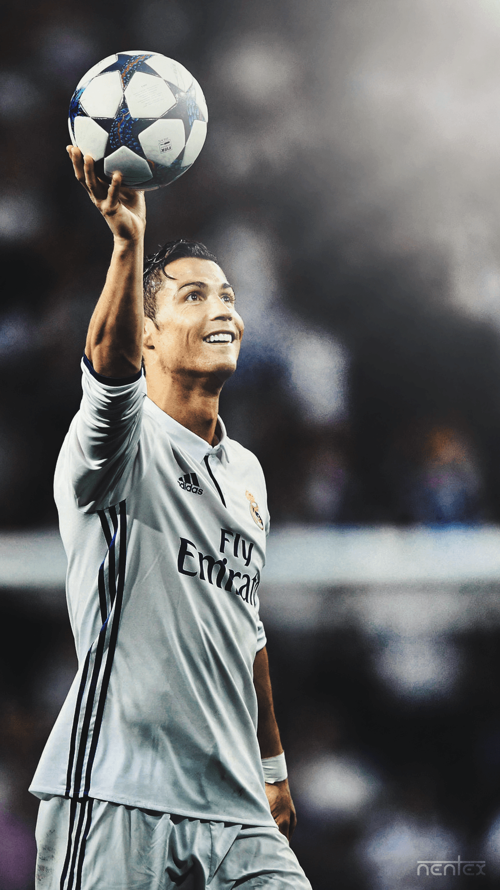

Cristiano Ronaldo dos Santos Aveiro GOIH ComM (Portuguese pronunciation: [kɾiʃˈtjɐnu ʁɔˈnaldu]; born 5 February 1985), better known as Ronaldo, is a Portuguese professional footballer who plays as a forward. He is the captain of the Portuguese national team and he is currently playing at Saudi Arabian football club Al Nassr.
 Cristiano Ronaldo dos Santos Aveiro was born in Funchal, Madeira Islands in early 1985 to Maria Dolores dos Santos and José Dinis Aveiro. He has one brother named Hugo, and two sisters named Katia and Elma. Ronaldo was diagnosed with a racing heart (Tachycardia) at age 15 in 2000. In 1997, 12-year-old Ronaldo went on a trial with Sporting CP.
 Ronaldo began his international career with the Portugal under-15's in 2001. In 2002, he played the U-17 Euro with Portugal's U-17. In June 2003, Ronaldo won the Toulon Tournament with the Portugal U-20. He played with the U21's in 2003 as well during the 2004 U-21 Euro qualification stages. He also played with the Portugal under-23 team at the 2004 Summer Olympics, where he scored one goal against Morocco.
Ronaldo's father, José Aveiro, died of liver disease at age 52 in September 2005. Ronaldo was 20 years old at the time. Ronaldo said that he does not like to drink alcohol, mostly because of his dad's death, but has on some very few occasions. In 2006, Ronaldo opened his first fashion boutique under the name "CR7" (his initials and shirt number) on the island he was born in, Madeira. He opened a second boutique in Lisbon in 2008, and a third in 2009, located in Madrid. In December 2013, Ronaldo opened his own museum called Museu CR7, which has all of his trophies and awards from his career.
Ronaldo holds numerous records, including being the all-time top scorer in the UEFA Champions League and the all-time top scorer for the Portuguese national team.
"I don't have to show anything to anyone. There is nothing to prove."
"Your love makes me strong, your hate makes me unstoppable."
The 2022 FIFA World Cup could see an international swansong for iconic duo Cristiano Ronaldo and Lionel Messi. The pair's rivalry has dominated world football for the last two decades, but as they approach their respective retirements Messi has already confirmed that this will be his last World Cup, and hinted that he will step away from Argentina altogether at the end of 2022.